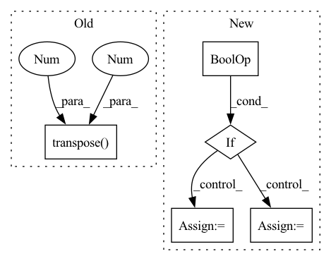

Pattern ID :17966
Before Change
positive_scores = torch.cat(
len(thresholds) * [positive_scores.unsqueeze(0)]
)
pos_scores_threshold = positive_scores.transpose(0 , 1 ) <= thresholds
FRR = (pos_scores_threshold.sum(0)).float() / positive_scores.shape[1]
del positive_scores
del pos_scores_thresholdAfter Change
del neg_scores_threshold
// Finding the threshold for EER
if (FAR - FRR).abs().item() < abs(final_FAR - final_FRR) or i == 0 :
min_index = i
final_FRR = FRR.item()
final_FAR = FAR.item()
// It is possible that eer != fpr != fnr. We return (FAR + FRR) / 2 as EER.
EER = (final_FAR + final_FRR) / 2In pattern: SUPERPATTERN
Frequency: 3
Non-data size: 5
Instances Fragment ID: 58870274
Project Name: speechbrain/speechbrain
Commit Name: 84bca108f8c3739bc2f058bab7e43db32c46e090
Time: 2022-07-01
Author: dominik.wagner@th-nuernberg.de
File Name: speechbrain/utils/metric_stats.py
M Class Name: AnonimousClass
N Class Name: AnonimousClass
M Method Name: EER(2)
N Method Name: EER(2)
M Parent Class:
N Parent Class:
M File Name: speechbrain/utils/metric_stats.py
N File Name: speechbrain/utils/metric_stats.py
M Start Line: 477
M End Line: 505
N Start Line: 477
N End Line: 504
Before Change
in_tensor = super().forward(in_tensor)
if in_tensor.shape[1] != 1:
raise ValueError("Shape is wrong.")
return in_tensor.transpose(0 , 1 ) .view(-1, in_tensor.shape[-2], in_tensor.shape[-1])
class EasyZ(Preprocessing):After Change
:param x: input. tensor or tuple / list of tensors.
:return:
if isinstance(x, tuple) or isinstance(x, list) :
out = [None] * x.__len__()
for i in range(x.__len__()):
out[i] = self.forward(x[i])
return out
in_tensor = super().forward(x) Fragment ID: 58870290
Project Name: turagalab/decode
Commit Name: 9c596b2d7a1b1511f5ed9f99503e723912c68c26
Time: 2019-10-01
Author: gitdev@LRM.PHOTO
File Name: deepsmlm/neuralfitter/pre_processing.py
M Class Name: N2C
N Class Name: N2C
M Method Name: forward(2)
N Method Name: forward(2)
M Parent Class: Preprocessing
N Parent Class: Preprocessing
M File Name: deepsmlm/neuralfitter/pre_processing.py
N File Name: deepsmlm/neuralfitter/pre_processing.py
M Start Line: 51
M End Line: 54
N Start Line: 49
N End Line: 58
Before Change
negative_scores = torch.cat(
len(thresholds) * [negative_scores.unsqueeze(0)]
)
neg_scores_threshold = negative_scores.transpose(0 , 1 ) > thresholds
FAR = (neg_scores_threshold.sum(0)).float() / negative_scores.shape[1]
del negative_scores
del neg_scores_thresholdAfter Change
del neg_scores_threshold
// Finding the threshold for EER
if (FAR - FRR).abs().item() < abs(final_FAR - final_FRR) or i == 0 :
min_index = i
final_FRR = FRR.item()
final_FAR = FAR.item()
// It is possible that eer != fpr != fnr. We return (FAR + FRR) / 2 as EER. Fragment ID: 58870401
Project Name: speechbrain/speechbrain
Commit Name: f1fd2091d053c0c34e88b134495f9b791037b3dd
Time: 2022-06-23
Author: tplink312@gmail.com
File Name: speechbrain/utils/metric_stats.py
M Class Name: AnonimousClass
N Class Name: AnonimousClass
M Method Name: EER(2)
N Method Name: EER(2)
M Parent Class:
N Parent Class:
M File Name: speechbrain/utils/metric_stats.py
N File Name: speechbrain/utils/metric_stats.py
M Start Line: 477
M End Line: 505
N Start Line: 477
N End Line: 504